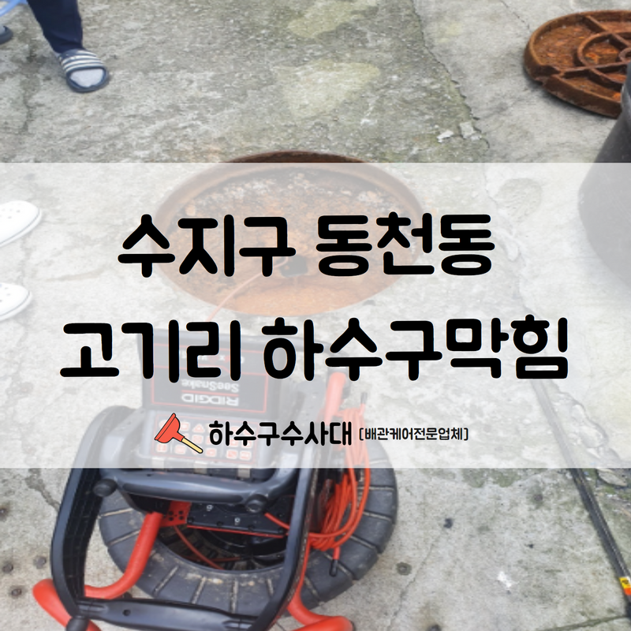
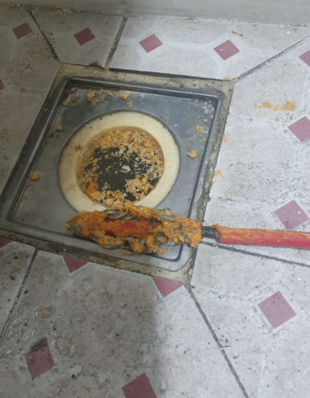
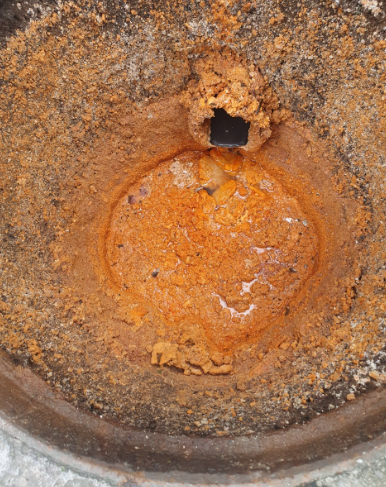
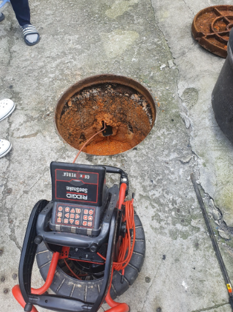
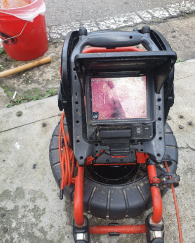
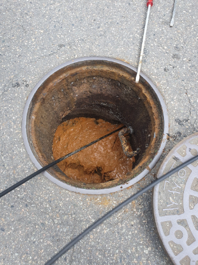
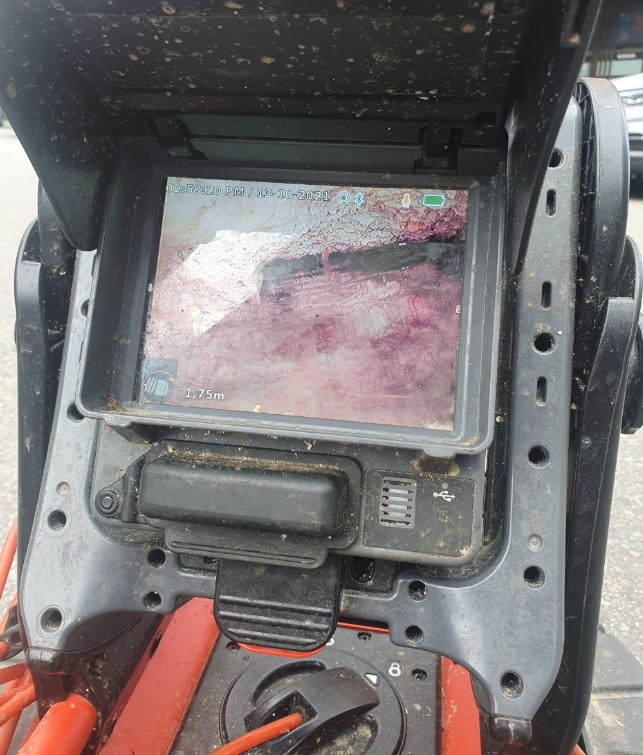

🏠 수지구 동천동 고기리 하수구막힘 속 시원하게 해결해드렸습니다!
용인 동천동 변기막힘 전문 시공 후기

📋 작업 개요
- 위치: 용인 동천동, 동천동, 용인
- 서비스 유형: 변기막힘, 하수구막힘, 배관막힘, 역류해결, 고압세척
- 작업 일시: 2022. 7. 30. 22:18
- 업체명: 하수구수사대 (010-5615-2118)
🔍 문제 상황
안녕하세요.하수구수사대 입니다.반갑습니다.
일상 속에서 우리는 언제든 하수구나 변기가 막히는 일이 발생을 할 수 있습니다. 잘 흘러가야 하는 물이 막혀서 흐르지 않게 된다면 당황스러울 수밖에 없는데요 특히 매일매일 쉬지 않고 돌아가야 하는 공장 같은 곳에서 하수구막힘이 발생을 하게 되면 그로 인한 피해는 정말 크다고 할 수밖에 없습니다. 그리고 공용 시설인 상가나 사무실과 같은 곳에서 막힘이 발생을 하는 경우에도 일상에 영향을 줄 수밖에 없는데요 이럴 때는 신속하고 정확한 해결이 필요하다고 할 수 있습니다.
수지구 동천동 고기리 하수구막힘 현장을 방문한 사례입니다.
문제가 발생을 한 현장은 용인에 위치하고 있는 공장용 사업체였는데요.어느 날 화장실에서 역류가 발생을 하게 되면서 해결이 되지 않아서 전문 업체로 연락을 주셨습니다.

🔎 원인 분석
💡 전문가 진단: 수지구 동천동 고기리 하수구막힘 현장을 방문한 사례입니다.
이번에 막힘이 발생한 것을 계기로 보다 확실한 문제 해결을 하기 위해서 여러 곳의 업체를 알아보신 상황이었는데요 이곳저곳의 후기를 보시고 저희 하수구수사대를 선택해 주셨습니다.
휴무 없이 근무가 진행되는 곳이었습니다.
공장은 매일 3교대로 돌아가는 상황이었기 때문에 쉬지 않고 운영이 되고 있었는데요. 하수구 막힘으로 인해서 힘들고 어려운 상황이었습니다. 이번에 방문한 수지구 동천동 고기리 하수구막힘은 내부 화장실에서부터 막힘과 역류가 발생을 하게 되었는데요.
이로 인해서 작업에도 아주 큰 영향을 많이 받고 있는 상황이었습니다. 특히나 직원들이 많이 사용을 하는 화장실이나 주방 곳곳에서 피해가 가고 있는 상황이었기 때문에 신속한 해결이 필요한 상황이었습니다.
충분한 상담을 한 후에 현장 해결을 진행하였는데요.

🔧 작업 과정
빠르게 원인 점검을 하기 위해서 장비를 갖추어서 방문하였습니다. 현장에서 원인 파악을 위해서 가장 먼저 해야 하는 일이 바로 내시경 작업입니다. 배관 전용 내시경 카메라를 이용해서 배수관의 내부 상태를 살펴보는 것인데요.
내시경 카메라를 이용하여야 보이지 않는 곳까지 확인을 해서 정확한 원인을 파악할 수 있기 때문입니다. 감으로만 해결을 하려고 한다면 정확한 원인 해결이 되지 않을 수 있기 때문에 2차 막힘이 또 발생할 수 있는 것입니다.
먼저 메인 배관부터 살펴보는 것이 중요한데요.
건물 내부에서 동시다발적으로 문제가 발생하고 있는 경우에는 메인 배관부터 살펴보는 것이 필요합니다. 외부에 있는 메인관에서부터 모든 하수구를 통해서 물이 정상적으로 배수가 되지 못하고 역류가 발생하는 상황인 것 같았는데요.
내시경 카메라를 통해서 확인을 하니 오랜 시간 동안 관리를 하지 않은 배관이라 전체적으로 이물질도 많고 기름 슬러지 등도 많이 끼어 있는 상황이었습니다. 수지구 동천동 고기리 하수구막힘의 원인을 알았으니 이물질을 제거하기 위해서 고압세척을 하기로 하였습니다.
부피가 크고 단단한 이물질이 자리 잡고 있는 경우에는
스프링 기기 등을 이용해야 하지만 이곳은 배수관 깊은 구간까지 이물질이 있어서 고압세척으로 진행을 하였습니다. 이번 작업을 진행하면서 고객님께서도 정기적인 세척의 중요성을 알게 되셨는데요.
전문 업체를 통해서 꾸준한 관리만이 이러한 갑작스러운 상황을 피할 수 있는 것입니다. 모든 공간에는 배수구가 있고 거름망이 설치되어 있긴 하지만 거름망에 걸러지지 않는 이물질이나 기름때 등이 쌓이게 되면 결국 하수구막힘이 발생할 수밖에 없는 것입니다.


✅ 작업 완료
이렇게 이번 하수구막힘의 현장도 원인에 따라서 신속하게 해결해 드렸습니다.
경기도 용인시 수지구 풍덕천로129번길 9 5층 590호




⚠️ 하수구 배관 막힘 예방 및 관리 가이드
- ✅ 머리카락, 비닐, 물티슈 등 물에 분해되지 않는 이물질은 하수구 유입을 절대 금지해 주세요.
- ✅ 하수구 거름망을 씌우고 모여진 이물질은 주기적으로 쓰레기통에 바로 비워주셔야 합니다.
- ✅ 배관 노후가 심할 경우 이물질이 더 쉽게 걸리므로 주기적인 배관 세척(고압세척 등)을 권장합니다.
- ✅ 작업 후 1년 이내 재발 시 하수구수사대에서 무상 A/S 보증 서비스를 제공합니다.
💡 핵심 정리
- 확실한 장비 작업(내시경 점검 및 샤프트 스케일링)으로 원인을 뿌리 뽑습니다.
- 작업 후 1년 이내에 동일한 부위 재발 시 100% 무상 A/S 서비스를 보장합니다.
- 서울 · 경기 · 인천 전 지역에 24시간 언제든 긴급 출동할 수 있도록 항시 대기 중입니다.
❓ 자주 묻는 질문 (FAQ)
🚨 용인 동천동 변기막힘 문제로 고민이신가요?
정확한 원인 진단과 확실한 시공으로 재발 없는 해결을 약속드립니다.
24시간 긴급 출동 | 서울 · 경기 · 인천 전지역 | 1년 내 재발 시 무상 A/S